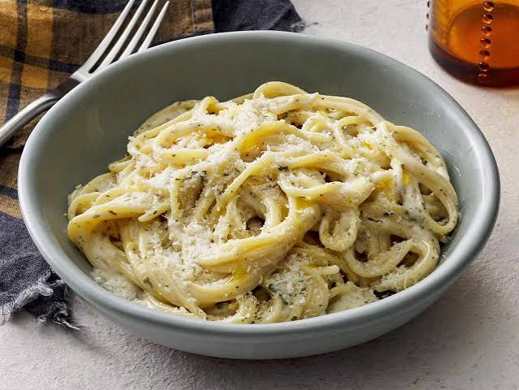

Spaghetti Carbonara is a classic Italian pasta dish from Rome. It is famous for its rich, creamy sauce made without any heavy cream, relying instead on a perfect blend of eggs, hard cheese, and savory cured meat. This quick and comforting meal takes only about 20 minutes to prepare, making it a favorite for busy weeknights. The secret to a perfect Carbonara is tossing the hot pasta with the egg and cheese mixture off the heat to create a smooth, velvety sauce.